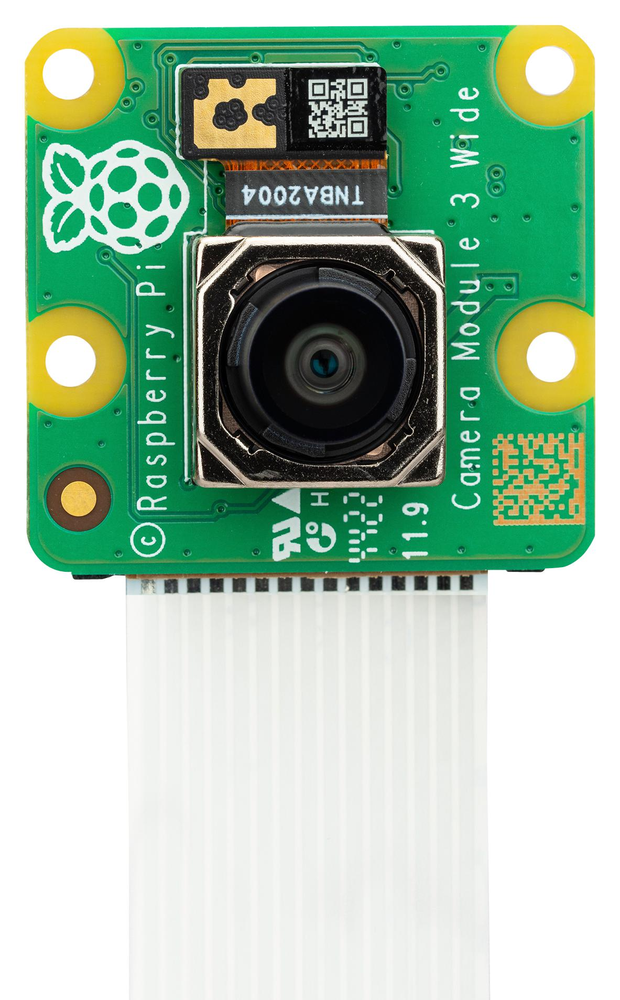

Pi Camera 3 Module
What is the Raspberry Pi Camera Module?
The Raspberry Pi Camera Module 3 is compact 12-megapixel camera that connects directly to the Rasbperry Pi inside the Magni robot. It features autofocus and strong low-light performance, making it useful for capturing photos and videos in a variety of conditions. Integrated with the robot’s software, it provides vision of the robot’s surroundings for navigation, monitoring, and projects.
{kind=link}
Why is the Camera Useful?
See in Low Light: Takes clear pictures even when it’s dark, great for night projects.
Auto Focus: Adjusts focus on its own, making it easy to capture moving objects.
Wide Views: Comes in standard or wide-angle versions to see more around the robot. The robot comes with the wide version, but you can always switch it for the standard version if you wish.
Basic Setup
Note
The robot ships with the Pi Camera Module 3 Wide already installed and ready to use.
If you want to switch to the standard camera module and run into trouble with the hardware/sofware please contact us at Ubiquity Robotics support.
How to use?
CONTENT REGARDING CAMERA USAGE INCOMING
Project Suggestion
A suggested project to get familiar with the Pi Camera would be the following:
Live Video Patrol: Use the Raspberry Pi Camera to stream live video, turning the Magni 6 Mini into a mobile surveillance bot. Great for remote monitoring.